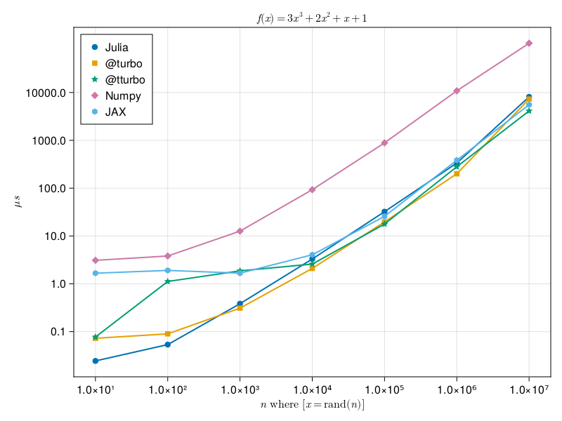

Benchmarking, profiling, and performance gotchas
This class is a short introduction to writing a performant code. As such, we cover
- how to identify weak spots in the code
- how to properly benchmark
- common performance anti-patterns
- Julia's "performance gotchas", by which we mean performance problems specific for Julia (typical caused by the lack of understanding of Julia or by a errors in conversion from script to functions)
Though recall the most important rule of thumb: Never optimize code from the very beginning. A much more productive workflow is
- write the code that is idiomatic and easy to understand
- meticulously cover the code with unit test, such that you know that the optimized code works the same as the original
- optimize the code
Premature optimization frequently backfires, because:
- you might end-up optimizing wrong thing, i.e. you will not optimize performance bottleneck, but something very different
- optimized code can be difficult to read and reason about, which means it is more difficult to make it right.
Optimize for your mode of operation
Let's for fun measure a difference in computation of a simple polynomial over elements of arrays between numpy, jax, default Julia, and Julia with LoopVectorization library.
import numpy as np
import jax
from jax import jit
import jax.numpy as jnp
jax.config.update("jax_enable_x64", True)
@jit
def f(x):
return 3*x**3 + 2*x**2 + x + 1
def g(x):
return 3*x**3 + 2*x**2 + x + 1
x = np.random.rand(10)
f(x)
x = random.uniform(key, shape=(10,), dtype=jnp.float64)
g(x)function f(x)
@. 3*x^3 + 2*x^2 + x + 1
end
using LoopVectorization
function f_turbo(x)
@turbo @. 3*x^3 + 2*x^2 + x + 1
end
function f_tturbo(x)
@tturbo @. 3*x^3 + 2*x^2 + x + 1
end
x = rand(10)
f(x)A complete implementations can be found here: Julia and Python. Julia should be executed with multithreaded support, in the case of below image it used four threads on MacBook PRO with M1 processor with four performant and four energy efficient cores. Below figure shows the minimum execution time with respect to the

It frequently happens that Julia newbies asks on forum that their code in Julia is slow in comparison to the same code in Python (numpy). Most of the time, they make trivial mistakes and it is very educative to go over their mistakes
Numpy 10x faster than julia what am i doing wrong? (solved julia faster now) [1]
function f(p) # line 1
t0,t1 = p # line 2
m0 = [[cos(t0) - 1im*sin(t0) 0]; [0 cos(t0) + 1im*sin(t0)]] # line 3
m1 = [[cos(t1) - 1im*sin(t1) 0]; [0 cos(t1) + 1im*sin(t1)]] # line 4
r = m1*m0*[1. ; 0.] # line 5
return abs(r[1])^2 # line 6
end
function g(p,n)
return [f(p[:,i]) for i=1:n]
end
g(rand(2,3),3) # call to force jit compilation
n = 10^6
p = 2*pi*rand(2,n)
@elapsed g(p,n)
Let's first use Profiler to identify, where the function spends most time.
Julia's built-in profiler
Julia's built-in profiler is part of the standard library in the Profile module implementing a fairly standard sampling based profiler. It a nutshell it asks at regular intervals, where the code execution is currently and marks it and collects this information in some statistics. This allows us to analyze, where these "probes" have occurred most of the time which implies those parts are those, where the execution of your function spends most of the time. As such, the profiler has two "controls", which is the delay between two consecutive probes and the maximum number of probes n (if the profile code takes a long time, you might need to increase it).
using Profile
Profile.init(; n = 989680, delay = 0.001))
@profile g(p,n)
Profile.clear()
@profile g(p,n)Making sense of profiler's output
The default Profile.print function shows the call-tree with count, how many times the probe occurred in each function sorted from the most to least. The output is a little bit difficult to read and orient in, therefore there are some visualization options.
What are our options?
ProfileViewis the workhorse with a GTK based API and therefore recommended for those with working GTKProfileSVGis theProfileViewwith the output exported in SVG format, which is viewed by most browser (it is also very convenient for sharing with others)PProf.jlis a front-end to Google's PProf profile viewer https://github.com/JuliaPerf/PProf.jlStatProfilerHTMLhttps://github.com/tkluck/StatProfilerHTML.jl
By personal opinion I mostly use ProfileView (or ProfileSVG) as it indicates places of potential type instability, which as will be seen later is very useful feature.
Profiling caveats
The same function, but with keyword arguments, can be used to change these settings, however these settings are system dependent. For example on Windows, there is a known issue that does not allow to sample faster than at 0.003s and even on Linux based system this may not do much. There are some further caveat specific to Julia:
- When running profile from REPL, it is usually dominated by the interactive part which spawns the task and waits for it's completion.
- Code has to be run before profiling in order to filter out all the type inference and interpretation stuff. (Unless compilation is what we want to profile.)
- When the execution time is short, the sampling may be insufficient -> run multiple times.
We will use ProfileSVG for its simplicity (especially installation). It shows the statistics in form of a flame graph which read as follows: , where . The hierarchy is expressed as functions on the bottom calls functions on the top. reads as follows:
- each function is represented by a horizontal bar
- function in the bottom calls functions above
- the width of the bar corresponds to time spent in the function
- red colored bars indicate type instabilities
- functions in bottom bars calls functions on top of upper bars
Function name contains location in files and particular line number called. GTK version is even "clickable" and opens the file in default editor.
Let's use the profiler on the above function g to find potential weak spots
using Profile, ProfileSVG
Profile.clear()
@profile g(p, n)
ProfileSVG.save("profile.svg")The output can be seen here
{kind=link}
We can see that the function is type stable and 2/3 of the time is spent in lines 3 and 4, which allocates arrays
[[cos(t0) - 1im*sin(t0) 0];
[0 cos(t0) + 1im*sin(t0)]]and
[[cos(t1) - 1im*sin(t1) 0];
[0 cos(t1) + 1im*sin(t1)]]Since version 1.8, Julia offers a memory profiler, which helps to identify parts of the code allocating memory on heap. Unfortunately, ProfileSVG does not currently visualize its output, hence we are going to use PProf.
using Profile, PProf
Profile.Allocs.@profile g(p,n)
PProf.Allocs.pprof(Profile.Allocs.fetch(), from_c=false)PProf by default shows outputs in call graph (how to read it can be found here), but also supports the flamegraph (fortunately). Investigating the output we found that most allocations are caused by concatenation of arrays on lines 3 and 4.
Scrutinizing the function f, we see that in every call, it has to allocate arrays m0 and m1 on the heap. The allocation on heap is expensive, because it might require interaction with the operating system and it potentially stress garbage collector. Can we avoid it? Repeated allocation can be frequently avoided by:
- preallocating arrays (if the arrays are of the fixed dimensions)
- or allocating objects on stack, which does not involve interaction with OS (but can be used in limited cases.)
Adding preallocation
function f!(m0, m1, p, u) # line 1
t0,t1 = p # line 2
m0[1,1] = cos(t0) - 1im*sin(t0) # line 3
m0[2,2] = cos(t0) + 1im*sin(t0) # line 4
m1[1,1] = cos(t1) - 1im*sin(t1) # line 5
m1[2,2] = cos(t1) + 1im*sin(t1) # line 6
r = m1*m0*u # line 7
return abs(r[1])^2 # line 8
end
function g2(p,n)
u = [1. ; 0.]
m0 = [[cos(p[1]) - 1im*sin(p[1]) 0]; [0 cos(p[1]) + 1im*sin(p[1])]] # line 3
m1 = [[cos(p[2]) - 1im*sin(p[2]) 0]; [0 cos(p[2]) + 1im*sin(p[2])]]
return [f!(m0, m1, p[:,i], u) for i=1:n]
endBenchmarking
The simplest benchmarking can be as simple as writing
repetitions = 100
t₀ = time()
for in 1:100
g(p, n)
end
(time() - t₀) / n where we add repetitions to calibrate for background processes that can step in the precise measurements (recall that your program is not allone). Writing the above for benchmarking is utterly boring. Moreover, you might want to automatically determine the number of repetitions (the shorter time the more repetitions you want), take care of compilation of the function outside measured loop, you might want to have more informative output, for example median, mean, and maximum time of execution, information about number of allocation, time spent in garbage collector, etc. This is in nutshell what BenchmarkTools.jl offers, which we consider an essential tool for anyone interesting in tuning its code.
We will using macro @benchmark from BenchmarkTools.jl to observe the speedup we will get between g and g2.
using BenchmarkTools
julia> @benchmark g(p,n)
BenchmarkTools.Trial: 5 samples with 1 evaluation.
Range (min … max): 1.168 s … 1.199 s ┊ GC (min … max): 11.57% … 13.27%
Time (median): 1.188 s ┊ GC (median): 11.91%
Time (mean ± σ): 1.183 s ± 13.708 ms ┊ GC (mean ± σ): 12.10% ± 0.85%
█ █ █ █ █
█▁█▁▁▁▁▁▁▁▁▁▁▁▁▁▁▁▁▁▁▁▁▁▁▁▁▁▁▁▁▁▁▁▁▁█▁█▁▁▁▁▁▁▁▁▁▁▁▁▁▁▁▁▁█ ▁
1.17 s Histogram: frequency by time 1.2 s <
Memory estimate: 1.57 GiB, allocs estimate: 23000002.julia> @benchmark g2(p,n)
BenchmarkTools.Trial: 11 samples with 1 evaluation.
Range (min … max): 413.167 ms … 764.393 ms ┊ GC (min … max): 6.50% … 43.76%
Time (median): 426.728 ms ┊ GC (median): 6.95%
Time (mean ± σ): 460.688 ms ± 102.776 ms ┊ GC (mean ± σ): 12.85% ± 11.04%
▃█ █
██▇█▁▁▁▁▁▁▁▁▇▁▁▁▁▁▁▁▁▁▁▁▁▁▁▁▁▁▁▁▁▁▁▁▁▁▁▁▁▁▁▁▁▁▁▁▁▁▁▁▁▁▁▁▁▁▁▁▇ ▁
413 ms Histogram: frequency by time 764 ms <
Memory estimate: 450.14 MiB, allocs estimate: 4000021.
We can see that we have approximately 3-fold improvement.
Let's profile again, not forgetting to use Profile.clear() to clear already stored probes.
Profile.clear()
@profile g2(p,n)
ProfileSVG.save("/tmp/profile2.svg")What the profiler tells is now (clear here to see the output)? - we spend a lot of time in similar in matmul, which is again an allocation of results for storing output of multiplication on line 7 matrix r. - the trigonometric operations on line 3-6 are very costly - Slicing p always allocates a new array and performs a deep copy.
{kind=link}
Let's get rid of memory allocations at the expense of the code clarity
using LinearAlgebra
@inline function initm!(m, t)
st, ct = sincos(t)
@inbounds m[1,1] = Complex(ct, -st)
@inbounds m[2,2] = Complex(ct, st)
end
function f1!(r1, r2, m0, m1, t0, t1, u)
initm!(m0, t0)
initm!(m1, t1)
mul!(r1, m0, u)
mul!(r2, m1, r1)
return @inbounds abs(@inbounds r2[1])^2
end
function g3(p,n)
u = [1. ; 0.]
m0 = [cos(p[1]) - 1im*sin(p[1]) 0; 0 cos(p[1]) + 1im*sin(p[1])]
m1 = [cos(p[2]) - 1im*sin(p[2]) 0; 0 cos(p[2]) + 1im*sin(p[2])]
r1 = m0*u
r2 = m1*r1
return [f1!(r1, r2, m0, m1, p[1,i], p[2,i], u) for i=1:n]
endjulia> @benchmark g3(p,n)
Range (min … max): 193.922 ms … 200.234 ms ┊ GC (min … max): 0.00% … 1.67%
Time (median): 195.335 ms ┊ GC (median): 0.00%
Time (mean ± σ): 196.003 ms ± 1.840 ms ┊ GC (mean ± σ): 0.26% ± 0.61%
█▁ ▁ ██▁█▁ ▁█ ▁ ▁ ▁ ▁ ▁ ▁ ▁▁ ▁ ▁ ▁
██▁▁█▁█████▁▁██▁█▁█▁█▁▁▁▁▁▁▁▁█▁▁▁█▁▁▁▁▁█▁▁▁██▁▁▁█▁▁█▁▁▁▁▁▁▁▁█ ▁
194 ms Histogram: frequency by time 200 ms <
Memory estimate: 7.63 MiB, allocs estimate: 24.Notice that now, we are about six times faster than the first solution, albeit passing the preallocated arrays is getting messy. Also notice that we spent a very little time in garbage collector. Running the profiler,
Profile.clear()
@profile g3(p,n)
ProfileSVG.save("/tmp/profile3.svg")we see here that there is a very little what we can do now. May-be, remove bounds checks (more on this later) and make the code a bit nicer.
{kind=link}
Let's look at solution from a Discourse
using StaticArrays, BenchmarkTools
function f(t0,t1)
cis0, cis1 = cis(t0), cis(t1)
m0 = @SMatrix [ conj(cis0) 0 ; 0 cis0]
m1 = @SMatrix [ conj(cis1) 0 ; 0 cis1]
r = m1 * (m0 * @SVector [1. , 0.])
return abs2(r[1])
end
g(p) = [f(p[1,i],p[2,i]) for i in axes(p,2)]julia> @benchmark g(p)
Range (min … max): 36.076 ms … 43.657 ms ┊ GC (min … max): 0.00% … 9.96%
Time (median): 37.948 ms ┊ GC (median): 0.00%
Time (mean ± σ): 38.441 ms ± 1.834 ms ┊ GC (mean ± σ): 1.55% ± 3.60%
█▃▅ ▅▂ ▂
▅▇▇███████▅███▄████▅▅▅▅▄▇▅▇▄▇▄▁▄▇▄▄▅▁▄▁▄▁▄▅▅▁▁▅▁▁▅▄▅▄▁▁▁▁▁▅ ▄
36.1 ms Histogram: frequency by time 43.4 ms <
Memory estimate: 7.63 MiB, allocs estimate: 2.We can see that it is six-times faster than ours while also being much nicer to read and having almost no allocations. Where is the catch? It uses StaticArrays which offers linear algebra primitices performant for vectors and matrices of small size. They are allocated on stack, therefore there is no pressure of GarbageCollector and the type is specialized on size of matrices (unlike regular matrices) works on arrays of an sizes. This allows the compiler to perform further optimizations like unrolling loops, etc.
What we have learned so far?
- Profiler is extremely useful in identifying functions, where your code spends most time.
- Memory allocation (on heap to be specific) can be very bad for the performance. We can generally avoided by pre-allocation (if possible) or allocating on the stack (Julia offers increasingly larger number of primitives for hits. We have already seen StaticArrays, DataFrames now offers for example String3, String7, String15, String31).
- Benchmarking is useful for comparison of solutions
Replacing deep copies with shallow copies (use view if possible)
Let's look at the following function computing mean of a columns
function cmean(x::AbstractMatrix{T}) where {T}
o = zeros(T, size(x,1))
for i in axes(x, 2)
o .+= x[:,i] # line 4
end
n = size(x, 2)
n > 0 ? o ./ n : o
end
x = randn(2, 10000)
@benchmark cmean(x)
BenchmarkTools.Trial: 10000 samples with 1 evaluation.
Range (min … max): 371.018 μs … 3.291 ms ┊ GC (min … max): 0.00% … 83.30%
Time (median): 419.182 μs ┊ GC (median): 0.00%
Time (mean ± σ): 482.785 μs ± 331.939 μs ┊ GC (mean ± σ): 9.91% ± 12.02%
▃█▄▃▃▂▁ ▁
████████▇▆▅▃▁▁▃▁▁▁▁▁▁▁▁▁▁▁▁▁▁▁▁▁▁▁▁▁▁▁▁▁▁▁▁▁▁▁▁▁▁▁▁▁▁▁▁▁▁▃▇██ █
371 μs Histogram: log(frequency) by time 2.65 ms <
Memory estimate: 937.59 KiB, allocs estimate: 10001.What we see that function is performing more than 10000 allocations. They come from x[:,i] which allocates a new memory and copies the content. In this case, this is completely unnecessary, as the content of the array x is never modified. We can avoid it by creating a view into an x, which you can imagine as a pointer to x which automatically adjust the bounds. Views can be constructed either using a function call view(x, axes...) or using a convenience macro @view which turns the usual notation x[...] to view(x, ...)
function view_cmean(x::AbstractMatrix{T}) where {T}
o = zeros(T, size(x,1))
for i in axes(x, 2)
o .+= @view x[:,i]
end
n = size(x,2)
n > 0 ? o ./ n : o
endWe obtain instantly a 10-fold speedup
julia> @benchmark view_cmean(x)
BenchmarkTools.Trial: 10000 samples with 1 evaluation.
Range (min … max): 36.802 μs … 166.260 μs ┊ GC (min … max): 0.00% … 0.00%
Time (median): 41.676 μs ┊ GC (median): 0.00%
Time (mean ± σ): 42.936 μs ± 9.921 μs ┊ GC (mean ± σ): 0.00% ± 0.00%
▂ █▆█▆▂ ▁▁ ▁ ▁ ▂
█▄█████████▇▅██▆█▆██▆▆▇▆▆▆▆▇▆▅▆▆▅▅▁▅▅▆▇▆▆▆▆▄▃▆▆▆▄▆▄▅▅▄▆▅▆▅▄▆ █
36.8 μs Histogram: log(frequency) by time 97.8 μs <
Memory estimate: 96 bytes, allocs estimate: 1.Traverse arrays in the right order
Let's now compute rowmean using the function similar to cmean and since we have learnt from the above, we use the view to have non-allocating version
function rmean(x::AbstractMatrix{T}) where {T}
o = zeros(T, size(x,2))
for i in axes(x, 1)
o .+= @view x[i,:]
end
n = size(x,1)
n > 0 ? o ./ n : o
end
x = randn(10000, 2)x = randn(10000, 2)
@benchmark rmean(x)
BenchmarkTools.Trial: 10000 samples with 1 evaluation.
Range (min … max): 44.165 μs … 194.395 μs ┊ GC (min … max): 0.00% … 0.00%
Time (median): 46.654 μs ┊ GC (median): 0.00%
Time (mean ± σ): 48.544 μs ± 10.940 μs ┊ GC (mean ± σ): 0.00% ± 0.00%
█▆█▇▄▁ ▁ ▂
██████▇▇▇▇▆▇▅██▇█▇█▇▆▅▄▄▅▅▄▄▄▄▂▄▅▆▅▅▅▆▅▅▅▆▄▆▄▄▅▅▄▅▄▄▅▅▅▅▄▄▃▅ █
44.2 μs Histogram: log(frequency) by time 108 μs <
Memory estimate: 192 bytes, allocs estimate: 2.The above seems OK and the speed is comparable to our tuned cmean. But, can we actually do better? We have to realize that when we are accessing slices in the matrix x, they are not aligned in the memory. Recall that Julia is column major (like Fortran and unlike C and Python), which means that consecutive arrays of memory are along columns. i.e for a matrix with n rows and m columns they are aligned as
1 | n + 1 | 2n + 1 | ⋯ | (m-1)n + 1
2 | n + 2 | 2n + 2 | ⋯ | (m-1)n + 2
3 | n + 3 | 2n + 3 | ⋯ | (m-1)n + 3
⋮ | ⋮ | ⋮ | ⋯ | ⋮
n | 2n | 3n | ⋯ | mnaccessing non-consecutively is really bad for cache, as we have to load the memory into a cache line and use a single entry (in case of Float64 it is 8 bytes) out of it, discard it and load another one. If cache line has length 32 bytes, then we are wasting remaining 24 bytes. Therefore, we rewrite rmean to access the memory in consecutive blocks as follows, where we essentially sum the matrix column by columns.
function aligned_rmean(x::AbstractMatrix{T}) where {T}
o = zeros(T, size(x,2))
for i in axes(x, 2)
o[i] = sum(@view x[:, i])
end
n = size(x, 1)
n > 0 ? o ./ n : o
end
aligned_rmean(x) ≈ rmean(x)julia> @benchmark aligned_rmean(x)
BenchmarkTools.Trial: 10000 samples with 10 evaluations.
Range (min … max): 1.988 μs … 11.797 μs ┊ GC (min … max): 0.00% … 0.00%
Time (median): 2.041 μs ┊ GC (median): 0.00%
Time (mean ± σ): 2.167 μs ± 568.616 ns ┊ GC (mean ± σ): 0.00% ± 0.00%
█▇▄▂▂▁▁ ▁ ▂▁ ▂
██████████████▅▅▃▁▁▁▁▁▄▅▄▁▅▆▆▆▇▇▆▆▆▆▅▃▅▅▄▅▅▄▄▄▃▃▁▁▁▄▁▁▄▃▄▃▆ █
1.99 μs Histogram: log(frequency) by time 5.57 μs <
Memory estimate: 192 bytes, allocs estimate: 2.Running the benchmark shows that we have about 20x speedup and we are on par with Julia's built-in functions.
Remark tempting it might be, there is actually nothing we can do to speed-up the cmean function. This trouble is inherent to the processor design and you should be careful how you align things in the memory, such that it is performant in your project
Detecting this type of inefficiencies is generally difficult, and requires processor assisted measurement. LIKWID.jl is a wrapper for a LIKWID library providing various processor level statistics, like throughput, cache misses
Type stability
Sometimes it happens that we create a non-stable code, which might be difficult to spot at first, for a non-trained eye. A prototypical example of such bug is as follows
function poor_sum(x)
s = 0
for xᵢ in x
s += xᵢ
end
s
endx = randn(10^8);
julia> @benchmark poor_sum(x)
BenchmarkTools.Trial: 23 samples with 1 evaluation.
Range (min … max): 222.055 ms … 233.552 ms ┊ GC (min … max): 0.00% … 0.00%
Time (median): 225.259 ms ┊ GC (median): 0.00%
Time (mean ± σ): 225.906 ms ± 3.016 ms ┊ GC (mean ± σ): 0.00% ± 0.00%
▁ ▁ ▁▁█ ▁▁ ▁ ▁█ ▁ ▁ ▁ ▁ ▁ ▁▁▁▁ ▁ ▁
█▁█▁███▁▁██▁▁█▁██▁█▁█▁█▁█▁█▁▁▁▁████▁▁▁▁▁▁▁▁▁▁▁▁▁▁▁▁▁▁▁▁▁▁█▁▁█ ▁
222 ms Histogram: frequency by time 234 ms <
Memory estimate: 16 bytes, allocs estimate: 1.Can we do better? Let's look what profiler says.
using Profile, ProfileSVG
Profile.clear()
@profile poor_sum(x)
ProfileSVG.save("/tmp/profile4.svg")The profiler (output here) does not show any red, which means that according to the profilerthe code is type stable (and so does the @code_typed poor_sum(x) does not show anything bad.) Yet, we can see that the fourth line of the poor_sum function takes unusually long (there is a white area above, which means that the time spend in childs of that line (iteration and sum) does the sum to the time spent in the line, which is fishy).
{kind=link}
A close lookup on the code reveals that s is initialized as Int64, because typeof(0) is Int64. But then in the loop, we add to s a Float64 because x is Vector{Float64}, which means during the execution, the type s changes the type.
So why nor compiler nor @code_typed(poor_sum(x)) warns us about the type instability? This is because of the optimization called small unions, where Julia can optimize "small" type instabilitites (recall the second lecture).
We can fix it for example by initializing x to be the zero of an element type of the array x (though this solution technically assumes x is an array, which means that poor_sum will not work for generators)
function stable_sum(x)
s = zero(eltype(x))
for xᵢ in x
s += xᵢ
end
s
endBut there is no difference, due to small union optimization (the above would kill any performance in older versions.)
julia> @benchmark stable_sum(x)
BenchmarkTools.Trial: 42 samples with 1 evaluation.
Range (min … max): 119.491 ms … 123.062 ms ┊ GC (min … max): 0.00% … 0.00%
Time (median): 120.535 ms ┊ GC (median): 0.00%
Time (mean ± σ): 120.687 ms ± 819.740 μs ┊ GC (mean ± σ): 0.00% ± 0.00%
█
▅▁▅▁▅▅██▅▁█▁█▁██▅▁█▅▅▁█▅▁█▁█▅▅▅█▁▁▁▁▁▁▁▅▁▁▁▁▁▅▁▅▁▁▁▁▁▁▅▁▁▁▁▁▅ ▁
119 ms Histogram: frequency by time 123 ms <
Memory estimate: 16 bytes, allocs estimate: 1.The optimization of small unions has been added in Julia 1.0. If we compare the of the same function in Julia 0.6, the difference is striking
julia> @time poor_sum(x)
1.863665 seconds (300.00 M allocations: 4.470 GiB, 4.29% gc time)
9647.736705951513
julia> @time stable_sum(x)
0.167794 seconds (5 allocations: 176 bytes)
9647.736705951513The optimization of small unions is a big deal. It simplifies implementation of arrays with missing values, or allows to signal that result has not been produced by returning missing. In case of arrays with missing values, the type of element is Union{Missing,T} where T is the type of non-missing element.
We can tell Julia that it is safe to vectorize the code. Julia tries to vectorize anyway, but @simd macro allows more aggressive operations, such as instruction reordering, which might change the output due imprecision of representation of real numbers in Floats.
function simd_sum(x)
s = zero(eltype(x))
@simd for xᵢ in x
s += xᵢ
end
s
endjulia> @benchmark simd_sum(x)
BenchmarkTools.Trial: 90 samples with 1 evaluation.
Range (min … max): 50.854 ms … 62.260 ms ┊ GC (min … max): 0.00% … 0.00%
Time (median): 54.656 ms ┊ GC (median): 0.00%
Time (mean ± σ): 55.630 ms ± 3.437 ms ┊ GC (mean ± σ): 0.00% ± 0.00%
█ ▂ ▄ ▂ ▂ ▂ ▄
▄▆█▆▁█▄██▁▁█▆██▆▄█▁▆▄▁▆▆▄▁▁▆▁▁▁▁▄██▁█▁▁█▄▄▆▆▄▄▁▄▁▁▁▄█▁▆▁▆▁▆ ▁
50.9 ms Histogram: frequency by time 62.1 ms <
Memory estimate: 16 bytes, allocs estimate: 1.Untyped global variables introduce type instability
function implicit_sum()
s = zero(eltype(y))
@simd for yᵢ in y
s += yᵢ
end
s
endjulia> y = randn(10^8);
julia> @benchmark implicit_sum()
BenchmarkTools.Trial: 1 sample with 1 evaluation.
Single result which took 10.837 s (11.34% GC) to evaluate,
with a memory estimate of 8.94 GiB, over 499998980 allocations.What? The same function where I made the parameters to be implicit has just turned nine orders of magnitude slower?
Let's look what the profiler says
Profile.clear()
y = randn(10^4)
@profile implicit_sum()
ProfileSVG.save("/tmp/profile5.svg")(output available here) which does not say anything except that there is a huge type-instability (red bar). In fact, the whole computation is dominated by Julia constantly determining the type of something.
{kind=link}
How can we determine, where is the type instability?
@code_typed implicit_sum()is- Cthulhu as
@descend implicit_sum() - JET available for Julia 1.7 onward
JET
JET is a code analyzer, which analyze the code without actually invoking it. The technique is called "abstract interpretation" and JET internally uses Julia's native type inference implementation, so it can analyze code as fast/correctly as Julia's code generation. JET internally traces the compiler's knowledge about types and detects, where the compiler cannot infer the type (outputs Any). Note that small unions are no longer considered type instability, since as we have seen above, the performance bottleneck is small. We can use JET as
using JET
@report_opt implicit_sum()All of these tools tells us that the Julia's compiler cannot determine the type of x. But why? I can just invoke typeof(x) and I know immediately the type of x.
To understand the problem, you have to think about the compiler.
You define function
implicit_sum().If you call
implicit_sumandydoes not exist, Julia will happily crash.If you call
implicit_sumandyexist, the function will give you the result (albeit slowly). At this moment, Julia has to specializeimplicit_sum. It has two options how to behave with respect toy.a. The compiler can assume that type of
yis the currenttypeof(y)but that would mean that if a user redefinesyand change the type, the specialization of the functionimplicit_sumwill assume the wrong type ofyand it can have unexpected results.b. The compiler take safe approach and determine the type of
yinside the functionimplicit_sumand behave accordingly (recall that julia is dynamically typed). Yet, not knowing the type precisely is absolute disaster for performance. You can see this assumption for yourself by typing@code_typed implicit_sum().
Notice the compiler dispatches on the name of the function and type of its arguments, hence, the compiler cannot create different versions of implicit_sum for different types of y, since it is not an argument, hence the dynamic resolution of types y inside implicit_sum function.
Julia takes the safe approach, which we can verify that although the implicit_sum was specialized (compiled) when y was Vector{Float64}, it works for other types
y = rand(Int, 1000)
implicit_sum() ≈ sum(y)
y = map(x -> Complex(y...), zip(rand(1000), rand(1000)))
implicit_sum() ≈ sum(y)This means, using global variables inside functions without passing them as arguments ultimately leads to type-instability. What are the solutions?
Julia 1.7 and below => Declaring y as const
We can declare y as const, which tells the compiler that y will not change (and for the compiler mainly indicates that type of y will not change).
Let's see that, but restart the julia before trying. After defining y as const, we see that the speed is the same as of simd_sum().
julia> @benchmark implicit_sum()
BenchmarkTools.Trial: 99 samples with 1 evaluation.
Range (min … max): 47.864 ms … 58.365 ms ┊ GC (min … max): 0.00% … 0.00%
Time (median): 50.042 ms ┊ GC (median): 0.00%
Time (mean ± σ): 50.479 ms ± 1.598 ms ┊ GC (mean ± σ): 0.00% ± 0.00%
▂ █▂▂▇ ▅ ▃
▃▁▃▁▁▁▁▇██████▅█▆██▇▅▆▁▁▃▅▃▃▁▃▃▁▃▃▁▁▃▁▃▁▁▁▁▁▁▁▁▁▁▁▁▁▃▁▁▁▁▁▃ ▁
47.9 ms Histogram: frequency by time 57.1 ms <
Memory estimate: 0 bytes, allocs estimate: 0.Also notice the difference in @code_typed implicit_sum()
Julia 1.8 and above => Provide type to y
Julia 1.8 added support for typed global variables which solves the above problem as can be seen from (do not forget to restart julia)
y::Vector{Float64} = rand(10^8);
``julia
@benchmark implicit_sum()
@code_typed implicit_sum()Unlike in const, we are free to change the bindings if it is possible to convert it to typeof(y)
y = [1.0,2.0]
typeof(y)
y = [1,2]
typeof(y)but y = ["1","2"] will issue an error, since String has no default conversion rule to Float64 (you can overwrite this by defining Base.convert(::Type{Float64}, s::String) = parse(Float64, s) but it will likely lead to all kinds of shenanigans).
Barier function
Recall the reason, why the implicit_sum is so slow is that every time the function invokes getindex and +, it has to resolve types. The solution would be to limit the number of resolutions, which can done by passing all parameters to inner function as follows (do not forget to restart julia if you have defined y as const before).
using BenchmarkTools
function barrier_sum()
simd_sum(y)
end
y = randn(10^8);@benchmark barrier_sum()
BenchmarkTools.Trial: 93 samples with 1 evaluation.
Range (min … max): 50.229 ms … 58.484 ms ┊ GC (min … max): 0.00% … 0.00%
Time (median): 53.882 ms ┊ GC (median): 0.00%
Time (mean ± σ): 54.064 ms ± 2.892 ms ┊ GC (mean ± σ): 0.00% ± 0.00%
▂▆█ ▆▄
▆█████▆▄█▆▄▆▁▄▄▄▄▁▁▄▁▄▄▆▁▄▄▄▁▁▄▁▁▄▁▁▆▆▁▁▄▄▁▄▆████▄▆▄█▆▄▄▄▄█ ▁
50.2 ms Histogram: frequency by time 58.4 ms <
Memory estimate: 16 bytes, allocs estimate: 1.using JET
@report_opt barrier_sum()Checking bounds is expensive
By default, julia checks bounds on every access to a location on an array, which can be difficult. Consider a following quicksort
function qsort!(a,lo,hi)
i, j = lo, hi
while i < hi
pivot = a[(lo+hi)>>>1]
while i <= j
while a[i] < pivot; i = i+1; end
while a[j] > pivot; j = j-1; end
if i <= j
a[i], a[j] = a[j], a[i]
i, j = i+1, j-1
end
end
if lo < j; qsort!(a,lo,j); end
lo, j = i, hi
end
return a
end
qsort!(a) = qsort!(a,1,length(a))On lines 6 and 7 the qsort! accesses elements of array and upon every access julia checks bounds. We can signal to the compiler that it is safe not to check bounds using macro @inbounds as follows
function inqsort!(a,lo,hi)
i, j = lo, hi
@inbounds while i < hi
pivot = a[(lo+hi)>>>1]
while i <= j
while a[i] < pivot; i = i+1; end
while a[j] > pivot; j = j-1; end
if i <= j
a[i], a[j] = a[j], a[i]
i, j = i+1, j-1
end
end
if lo < j; inqsort!(a,lo,j); end
lo, j = i, hi
end
return a
end
inqsort!(a) = inqsort!(a,1,length(a))We @benchmark to measure the impact
julia> a = randn(1000);
julia> @benchmark qsort!($(a))
BenchmarkTools.Trial: 10000 samples with 4 evaluations.
Range (min … max): 7.324 μs … 41.118 μs ┊ GC (min … max): 0.00% … 0.00%
Time (median): 7.415 μs ┊ GC (median): 0.00%
Time (mean ± σ): 7.666 μs ± 1.251 μs ┊ GC (mean ± σ): 0.00% ± 0.00%
▇█ ▁ ▁ ▁ ▁ ▁
██▄█▆█▆▆█▃▇▃▁█▆▁█▅▃█▆▁▆▇▃▄█▆▄▆█▇▅██▄▃▃█▆▁▁▃▄▃▁▃▁▆▅▅▅▁▃▃▅▆▆ █
7.32 μs Histogram: log(frequency) by time 12.1 μs <
Memory estimate: 0 bytes, allocs estimate: 0.
julia> @benchmark inqsort!($(a))
BenchmarkTools.Trial: 10000 samples with 7 evaluations.
Range (min … max): 4.523 μs … 873.401 μs ┊ GC (min … max): 0.00% … 0.00%
Time (median): 4.901 μs ┊ GC (median): 0.00%
Time (mean ± σ): 5.779 μs ± 9.165 μs ┊ GC (mean ± σ): 0.00% ± 0.00%
▄█▇▅▁▁▁▁ ▁▁▂▃▂▁▁ ▁ ▁
█████████▆▆▆▆▆▇██████████▇▇▆▆▆▇█▇▆▅▅▆▇▅▅▆▅▅▅▇▄▅▆▅▃▅▅▆▅▄▄▃▅▅ █
4.52 μs Histogram: log(frequency) by time 14.8 μs <
Memory estimate: 0 bytes, allocs estimate: 0.
and see that by not checking bounds, the code is 33% faster.
Boxing in closure
Recall closure is a function which contains some parameters contained
An example of closure (adopted from JET.jl)
function abmult(r::Int)
if r < 0
r = -r
end
# the closure assigned to `f` make the variable `r` captured
f = x -> x * r
return f
end;Another example of closure counting the error and printing it every steps
function initcallback(; steps = 10)
i = 0
ts = time()
y = 0.0
cby = function evalcb(_y)
i += 1.0
y += _y
if mod(i, steps) == 0
l = y / steps
y = 0.0
println(i, ": loss: ", l," time per step: ",round((time() - ts)/steps, sigdigits = 2))
ts = time()
end
end
cby
end
cby = initcallback()
for i in 1:100
cby(rand())
endfunction simulation()
cby = initcallback(;steps = 10000) #intentionally disable printing
for i in 1:1000
cby(sin(rand()))
end
end
@benchmark simulation()using Profile, ProfileSVG
Profile.clear()
@profile (for i in 1:100; simulation(); end)
ProfileSVG.save("/tmp/profile.svg")We see a red bars in lines 4 and 8 of evalcb, which indicates the type instability hindering the performance. Why they are there? The answer is tricky.
In closures, as the name suggest, function closes over (or captures) some variables defined in the function outside the function that is returned. If these variables are of primitive types (think Int, Float64, etc.), the compiler assumes that they might be changed. Though when primitive types are used in calculations, the result is not written to the same memory location but to a new location and the name of the variable is made to point to this new variable location (this is called rebinding). We can demonstrate it on this example [2].
julia> x = [1];
julia> objectid(x)
0x79eedc509237c203
julia> x .= [10]; # mutating contents
julia> objectid(x)
0x79eedc509237c203
julia> y = 100;
julia> objectid(y)
0xdb216d4e5c739c77
julia> y = y + 100; # rebinding the variable name
julia> objectid(y)
0xb642af5f06b41e88Since the inner function needs to point to the same location, julia uses Box container which can be seen as a translation, where the pointer inside the Box can change while the inner function contains the same pointer to the Box. This makes possible to change the captured variables and tracks changes in the point. Sometimes (it can happen many time) the compiler fails to determine that the captured variable is read only, and it wrap it (box it) in the Box wrapper, which makes it type unstable, as Box does not track types (it would be difficult as even the type can change in the inner function). This is what we can see in the first example of abmult. In the second example, the captured variable y and i changes and the compiler is right.
What can we do?
- The first difficulty is to even detect this case. We can spot it using
@code_typedand of courseJET.jlcan do it and it will warn us. Above we have seen the effect of the profiler.
Using @code_typed
julia> @code_typed abmult(1)
CodeInfo(
1 ─ %1 = Core.Box::Type{Core.Box}
│ %2 = %new(%1, r@_2)::Core.Box
│ %3 = Core.isdefined(%2, :contents)::Bool
└── goto #3 if not %3
2 ─ goto #4
3 ─ $(Expr(:throw_undef_if_not, :r, false))::Any
4 ┄ %7 = Core.getfield(%2, :contents)::Any
│ %8 = (%7 < 0)::Any
└── goto #9 if not %8
5 ─ %10 = Core.isdefined(%2, :contents)::Bool
└── goto #7 if not %10
6 ─ goto #8
7 ─ $(Expr(:throw_undef_if_not, :r, false))::Any
8 ┄ %14 = Core.getfield(%2, :contents)::Any
│ %15 = -%14::Any
└── Core.setfield!(%2, :contents, %15)::Any
9 ┄ %17 = %new(Main.:(var"#5#6"), %2)::var"#5#6"
└── return %17
) => var"#5#6"Using Jet.jl (recall it requires the very latest Julia 1.7)
julia> @report_opt abmult(1)
═════ 3 possible errors found ═════
┌ @ REPL[15]:2 r = Core.Box(:(_7::Int64))
│ captured variable `r` detected
└──────────────
┌ @ REPL[15]:2 Main.<(%7, 0)
│ runtime dispatch detected: Main.<(%7::Any, 0)
└──────────────
┌ @ REPL[15]:3 Main.-(%14)
│ runtime dispatch detected: Main.-(%14::Any)
└──────────────- Sometimes, we do not have to do anything. For example the above example of
evalcbfunction, we assume that all the other code in the simulation would take much more time so a little type instability is not important. - Alternatively, we can explicitly use
Refinstead of theBox, which are typed wrappers, but they are awkward to use.
function ref_abmult(r::Int)
if r < 0
r = -r
end
rr = Ref(r)
f = x -> x * rr[]
return f
end;We can see in @code_typed that the compiler is happy as it can resolve the types correctly
julia> @code_typed ref_abmult(1)
CodeInfo(
1 ─ %1 = Base.slt_int(r@_2, 0)::Bool
└── goto #3 if not %1
2 ─ %3 = Base.neg_int(r@_2)::Int64
3 ┄ %4 = φ (#2 => %3, #1 => _2)::Int64
│ %5 = %new(Base.RefValue{Int64}, %4)::Base.RefValue{Int64}
│ %6 = %new(var"#7#8"{Base.RefValue{Int64}}, %5)::var"#7#8"{Base.RefValue{Int64}}
└── return %6
) => var"#7#8"{Base.RefValue{Int64}}Jet is also happy.
julia> @report_opt ref_abmult(1)
No errors !
So when you use closures, you should be careful of the accidental boxing, since it can inhibit the speed of code. This is a big deal in Multithreadding and in automatic differentiation, both heavily uses closures. You can track the discussion here.
NamedTuples are more efficient that Dicts
It happens a lot in scientific code, that some experiments have many parameters. It is therefore very convenient to store them in Dict, such that when adding a new parameter, we do not have to go over all defined functions and redefine them.
Imagine that we have a (nonsensical) simulation like
settings = Dict(:stepsize => 0.01, :h => 0.001, :iters => 500, :info => "info")
function find_min!(f, x, p)
for i in 1:p[:iters]
x̃ = x + p[:h]
fx = f(x) # line 4
x -= p[:stepsize] * (f(x̃) - fx)/p[:h] # line 5
end
x
endNotice the parameter p is a Dict and that it can contain arbitrary parameters, which is useful. Hence, Dict is cool for passing parameters. Let's now run the function through the profiler
x₀ = rand()
f(x) = x^2
Profile.clear()
@profile find_min!(f, x₀, settings)
ProfileSVG.save("/tmp/profile6.svg")from the profiler's output here we can see some type instabilities. Where they come from? The compiler does not have any information about types stored in settings, as the type of stored values are Any (caused by storing String and Int).
{kind=link}
julia> typeof(settings)
Dict{Symbol, Any}The second problem is get operation on dictionaries is very time consuming operation (although technically it is O(1)), because it has to search the key in the list. Dicts are designed as a mutable container, which is not needed in our use-case, as the settings are static. For similar use-cases, Julia offers NamedTuple, with which we can construct settings as
nt_settings = (;stepsize = 0.01, h=0.001, iters=500, :info => "info")The NamedTuple is fully typed, but which we mean the names of fields are part of the type definition and fields are also part of type definition. You can think of it as a struct. Moreover, when accessing fields in NamedTuple, compiler knows precisely where they are located in the memory, which drastically reduces the access time. Let's see the effect in BenchmarkTools.
julia> @benchmark find_min!(x -> x^2, x₀, settings)
BenchmarkTools.Trial: 10000 samples with 1 evaluation.
Range (min … max): 86.350 μs … 4.814 ms ┊ GC (min … max): 0.00% … 97.61%
Time (median): 90.747 μs ┊ GC (median): 0.00%
Time (mean ± σ): 102.405 μs ± 127.653 μs ┊ GC (mean ± σ): 4.69% ± 3.75%
▅██▆▂ ▁▁ ▁ ▂
███████▇▇████▇███▇█▇████▇▇▆▆▇▆▇▇▇▆▆▆▆▇▆▇▇▅▇▆▆▆▆▄▅▅▄▅▆▆▅▄▅▃▅▃▅ █
86.4 μs Histogram: log(frequency) by time 209 μs <
Memory estimate: 70.36 KiB, allocs estimate: 4002.
julia> @benchmark find_min!(x -> x^2, x₀, nt_settings)
BenchmarkTools.Trial: 10000 samples with 7 evaluations.
Range (min … max): 4.179 μs … 21.306 μs ┊ GC (min … max): 0.00% … 0.00%
Time (median): 4.188 μs ┊ GC (median): 0.00%
Time (mean ± σ): 4.493 μs ± 1.135 μs ┊ GC (mean ± σ): 0.00% ± 0.00%
█▃▁ ▁ ▁ ▁ ▁
████▇████▄██▄█▃██▄▄▇▇▇▇▅▆▆▅▄▄▅▄▅▅▅▄▁▅▄▁▄▄▆▆▇▄▅▆▄▄▃▄▆▅▆▁▄▄▄ █
4.18 μs Histogram: log(frequency) by time 10.8 μs <
Memory estimate: 16 bytes, allocs estimate: 1.Checking the output with JET, there is no type instability anymore
@report_opt find_min!(f, x₀, nt_settings)
No errors !Don't use IO unless you have to
- debug printing in performance critical code should be kept to minimum or using in memory/file based logger in stdlib
Logging.jl
function find_min!(f, x, p; verbose=true)
for i in 1:p[:iters]
x̃ = x + p[:h]
fx = f(x)
x -= p[:stepsize] * (f(x̃) - fx)/p[:h]
verbose && println("x = ", x, " | f(x) = ", fx)
end
x
end
@btime find_min!($f, $x₀, $params_tuple; verbose=true)
@btime find_min!($f, $x₀, $params_tuple; verbose=false)- interpolation of strings is even worse https://docs.julialang.org/en/v1/manual/performance-tips/#Avoid-string-interpolation-for-I/O
function find_min!(f, x, p; verbose=true)
for i in 1:p[:iters]
x̃ = x + p[:h]
fx = f(x)
x -= p[:stepsize] * (f(x̃) - fx)/p[:h]
verbose && println("x = $x | f(x) = $fx")
end
x
end
@btime find_min!($f, $x₀, $params_tuple; verbose=true)